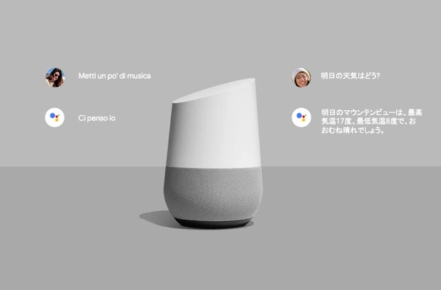
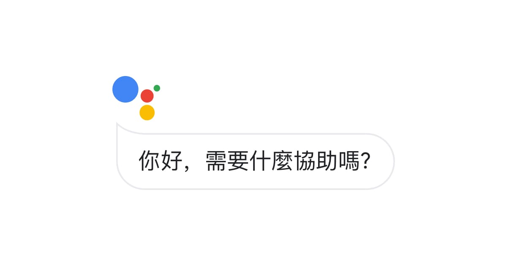
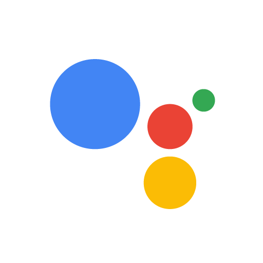

瀏覽歷史紀錄： 筆
Google助理
~~~~簡介看這邊~~~~
Google助理是Google開發的智慧型個人助理，於2016年5月在Google I/O發布。
與Google即時資訊不同，Google助理可以參與雙向對話。
Google助理目前被整合在Allo應用、Google Home裝置、Android Nougat或以上的裝置、Pixelbook、Wear OS、Android TV、iOS和Android Auto。



聲音
Google助理最初選用琪琪·貝瑟爾（Kiki Baessell）的聲音為美國女性聲音，
自2010年以來，該聲音一直是Google Voice語音信箱系統的聲音。
在2018年5月8日的開發者大會上，Google的SEO宣布為個人助理加入六種新的聲音，
其中一個是歌手約翰·傳奇的。DeepMind開發的語音合成器WaveNet大大減少了語音演員建立語音模型所需的音訊樣本數量。
2019年10月11日，演員伊莎·蕾的聲音也被宣布將成為Google助理語音的新選擇，
使用者可以通過「Okay, Google, talk like Issa」的指令激發此選項。
多平台支援
作為Allo和Google Home之外的系統級整合，Google助理最初只獨家開放智慧型手機Pixel與Pixel XL使用。
2017年2月，Google宣布，在部分英語國家市場，
已開始執行Android Marshmallow或Nougat的Android智慧型手機上可以使用Google助理。
如何設定google助理語言？
在Android 手機或平板電腦上開啟「Google Home」應用程式 。
依序輕觸右上方的個人資料相片或姓名縮寫 [Google 助理設定] [Google 助理] [語言]。
選擇所需語言。 如要變更主要語言，請輕觸目前的語言。 如要選擇Google助理的聲音，請輕觸
[新增語言]
看更多
需求條件
如要使用 Google 助理，你的裝置需符合下列條件：
- 搭載 Android 5.0 以上版本的作業系統，且記憶體至少有 1 GB，或是
- 搭載 Android 6.0 以上版本的作業系統，且記憶體至少有 1.5 GB
- 已安裝 Google app 6.13 以上版本
- 已安裝 Google Play 服務
- 螢幕解析度須高於 720p
- 裝置的語言已設為上述其中一種語言